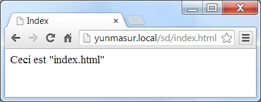

Yun – Expériences & découvertes
Le champ d’application
Dans un article précédent, je montrais le besoin d’activer une DHCP pour utiliser pleinement un Arduino Yun.
Le présent article répond à quelques questions légitimes de l’utilisation et des possibilités de cette plateforme bi-processeur. Voici rapidement les caractéristiques du Yun. C’est un hardware similaire au Leonardo, équipé du CPU Atmel ATmega32U4, mais il comprend – c’est ici l’essentiel – un second CPU Atheros AR9331, qui tourne un Linux. OpenWrt est adapté pour le Yun, appelé Linino. L’OS est sur une flash de 16 Mb ; il en utilise 9 Mb. Il a des connexions Ethernet ; Wifi et USB-A supplémentaires ; un port pour mini carte SD. L’alimentation se fait en 5V, pas de régulateur. Soit par la mini USB, soit par les pins 5V et VCC. La partie Arduino communique avec le Linux via le serial1.
Les détails du système sont décrits ici (en anglais) : http://arduino.cc/en/Guide/ArduinoYun .
Chaque unité à son propre bouton de reset ; ainsi que le WiFi. Gag : il faut presser 2 x pour relancer le 32U4, donc le sketch (soit le programme) Arduino ; il se redémarre en quelques secondes pendant que la liaison USB tombe et se reconnecte.
Redémarrer le Linino prend plus de temps, env. 60 sec ; le Wifi n’est actif qu’après 1’ 15’’. Ceci rend donc long les différents essais de configuration et/ou de paramètres.
Au début, commencez par mettre à jour votre version de Linux, en en copiant l’image binaire sur une SD, à introduire dans son logement + redémarrage. Ça va vite. Les mises à jour, pas le démarrage…
Travailler avec le Wifi
M’a occasionné quelques déboires. Celui-ci n’est pas performant, dans la mesure où mes 2 PCs portables se connectent sans problème avec un débit entre 18 et 36 Mb, selon où ils sont placés sur le bureau ; tandis que le Yun ne « croche » qu’une fois sur deux ; et perd la connexion par la suite.
Si le Yun ne croche pas sur le routeur Wifi, il se met en en mode serveur, et propage un nom Wifi du genre ArduinoYun-XXXXXXXXXXXX. Seule la page de config est atteignable. Et on reconfigure… pour la n ième fois. D’où mon souhait de développer, configurer et tester avec une liaison Ethernet câble ; puis le programme terminé, le rapprocher du routeur Wifi. Ce dernier est au sous-sol, alors que le bureau est au premier étage.
Travailler avec le Linuino
Comme tout bon Linux, il offre la possibilité de se connecter en console – donc avec PuTTY http://www.putty.org/ – Mais il faut connaître l’adresse IP du Yun, of course. On se logue en ‘root’ avec le PW que l’on aura mis dans la page d’accueil initiale. Le Linuino comporte l’éditeur Nano, ce qui facilite les choses pour les modifications de fichier.
Nom du Yun propagé sur le réseau
Le Yun n’utilise pas le classique Netbios pour propager son nom réseau, même si l’EDI Arduino le trouve, le PC ne le voit pas. Il faut donc le pinguer par son adresse ; ce n’est pas pratique. Deux solutions s’offrent pour qu’il soit reconnu nommément sur PC, par exemple par la commande PING :
– Installer le programme Apple « Bonjour », destiné aux imprimantes sur LAN
– Modifier le fichier Linux /etc/network
root@yunmasur:~# cat /etc/config/network config interface 'loopback' option ifname 'lo' option proto 'static' option ipaddr '127.0.0.1' option netmask '255.0.0.0' config interface 'lan' option proto 'dhcp' config interface 'wan' option ifname 'eth1' option proto 'dhcp' option metric '10' option hostname 'yunmasur'
Note 1: si les 2 interfaces Ethernet et Wifi sont connectées, un ping selon le hostname va sur la 1ère interface qui s’est connectée, donc l’Ethernet.
Note 2 : mes explications se rapportent à un Yun qui s’appelle « yunmasur ». Bien entendu, vous l’interprétez avec le nom du Yun que vous venez de déballer et d’essayer !
Pour le stockage de données sur carte SD, on trouve comme exemple: http://arduino.cc/en/Tutorial/YunDatalogger . Et pour lire des températures et les afficher sur une page WEB, il y a bien un projet qui ressemble à ça, ici : http://arduino.cc/en/Tutorial/TemperatureWebPanel . Cependant, d’après le nombre de questions et de posts dans le forum, tout laisse croire qu’il n’est pas du tout clair. Voir incomplet, à tout le moins dans sa partie WEB.
Où et comment doivent être les fichiers ?
Rien n’est bien expliqué ; si on les voit depuis Linux ou depuis l’URL, ça change forcément. Mais comment ? La structure des fichiers sur la SD doit être selon les 2 possibilités ci après.
Servir une page WEB statique
La SD card doit contenir la page WEB et les fichiers annexes, comme les images ou les CSS, dans le répertoire ainsi: /arduino/www/index.htm et le Yun répond à l’URL yunmasur.local/sd/

Et avec l’extension « html », c’est bien ce fichier qui vient:

Visiblement, tout ce qui est dans la SD /arduino/www/ est servi, on peut y mettre des pages, des images et des scripts JS. Pour du PHP, il faudra avant l’installer sur le Linino. A ce stade, la partie Arduino sketch n’est pas sollicitée.
Utiliser une URL par le sketch
L’exemple de base est le programme Bridge.ino qui démontre comment lire une partie de l’URL au profit du sketch. Sur la carte SD, les répertoires : /arduino/www/ (et n’importe quoi, à partir de ça) suffisent.
Les deux URLs suivantes allument et éteignent la LED13, placée d’office sur le Yun. Pour voir à quelle vitesse, je les ai réunies dans un batch, qui tourne en rond. Les URL sont lancées par un programme assez génial fonctionnant en ligne de commande : cURL, qui est installé à la racine du disque C :
:start c:\curl\curl http://Yunmasur.local/arduino/digital/13/1 c:\curl\curl http://Yunmasur.local/arduino/digital/13/0 goto start
Vous vous attendez à un clignotement rapide, imperceptible à l’œil ? Eh bien non. Temps d’une phase ~2,8 sec. (f = 0.17 Hz)
La partie de l’URL passée au sketch est celle en jaune. Après une connexion, on peut lire la partie jusqu’au ‘/’, après l’URL de base Yunmasur.local/arduino/ , ainsi :
void process(YunClient client) {
// read the command
String command = client.readStringUntil('/');
Dans ce cas : ce sera « digital ». Ensuite, c’est assez facile de lire le reste pour en déduire le n° de sortie (13) et l’état, 1 ou 0. S’il n’y a pas d’état, le sketch est prévu pour rendre l’état de la pin 13.
L’usage du C++ String
Les exemples font un usage assez abondant de manipulation avec la classe String http://arduino.cc/en/Reference/StringObject . C’est une facilité tentante… la doc de la librairie dit :
You can concatenate Strings, append to them, search for and replace substrings, and more. It takes more memory than a simple character array, but it is also more useful.
Avec un processeur doté de 2500 octets( !) est-ce bien raisonnable ? Une recherche sur le WEB l’indique : c’est non ! C’est vite la source de déboires et de comportement peu catholique. Liens en relation :
http://stackoverflow.com/questions/17972523/are-there-limits-on-string-length-in-arduino et
http://forum.arduino.cc/index.php/topic,85491.0.html
Donc String, c’est bien pour les exemples, car ça simplifie l’écriture. Sur un PC qui est doté de Gb de mémoire, OK. Mais pour la sûreté et la pérennité du fonctionnement, dans le cas de codage de programme embarqué, on évite les pratiques qui font de l’allocation de mémoire à la tout va.
Voir le Yun travailler
Pour cela, il faut se connecter avec PuTTY en console, et lancer la commande top. On voit alors que le programme Python bridge.py est le plus gros consommateur de CPU et de mémoire.

Le projet (en cours)
Il comporte 3 capteurs de température disposés pour mesurer sur ma chaudière:
– L’eau de retour du circuit des capteurs solaires
– L’eau solaire (200 l)
– L’eau chaude sanitaire (200 l aussi)
Le programme doit me permettre de voir via un browser, les températures actuelles ; il doit stocker dans un fichier une ligne avec la date et l’heure, les 3 valeurs ; ceci toutes les 10 minutes. Les données seront au format tabulé de manière à être exploitable par Excel. Pour ce faire, j’ai utilisé 4 techniques :
– La lecture de sondes one-wire
– La lecture du temps Linux
– Le stockage de données sur carte SD
– Un interfaçage WEB avec le sketch.
Il fonctionne, mais n’est pas encore présentable, ce sera pour plus tard…
Yves Masur (8/2014)
Références :
cURL: http://fr.wikipedia.org/wiki/CURL
Arduino Yun: http://arduino.cc/en/Main/ArduinoBoardYun
One wire : http://playground.arduino.cc/Learning/OneWire
L’antenne intégrée sur la platine ne permet pas une longue distance entre le routeur wifi et le Yun, mais elle a le mérite de pouvoir, dès la mise sous tension du module, de permettre des échanges de transmissions.
Par contre le Yun est équipé d’une fiche pour une antenne externe. Vous pouvez ainsi récupérer une antenne d’un ancien router et la brancher sur votre Yun … et tout à coup la distance de transmission sera parfaite !